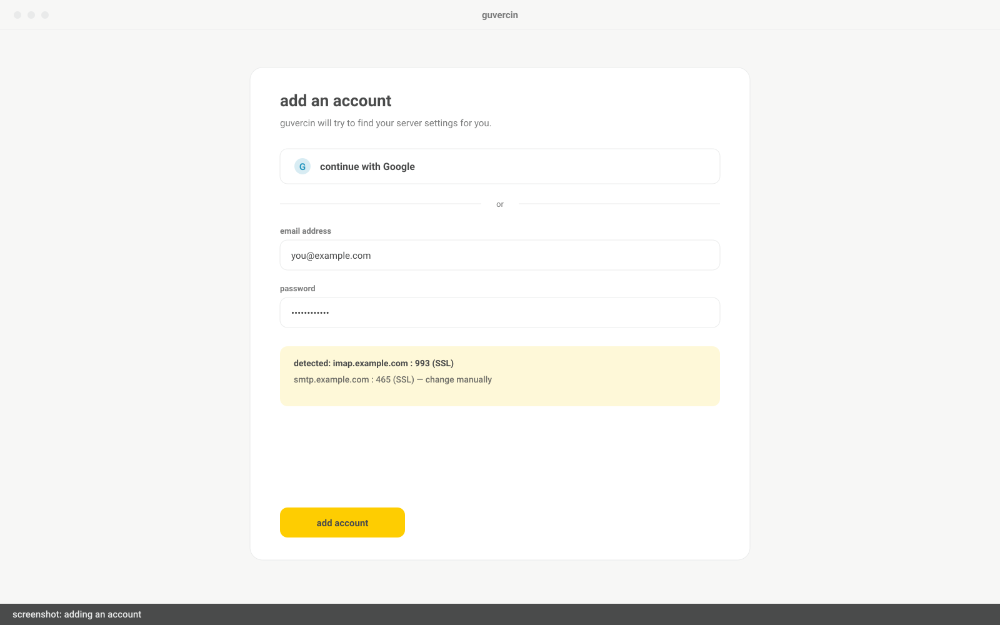
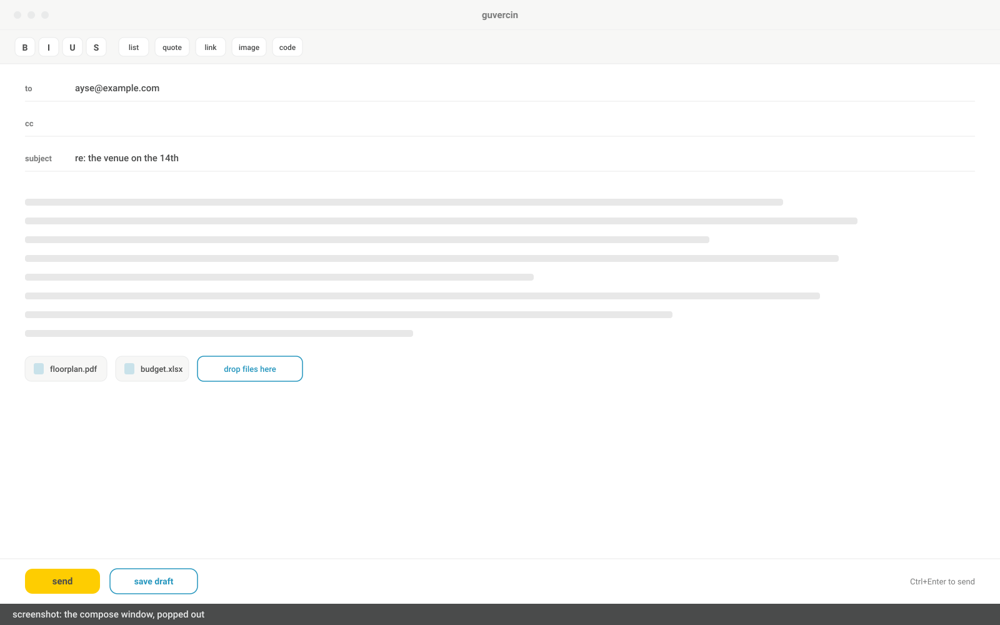
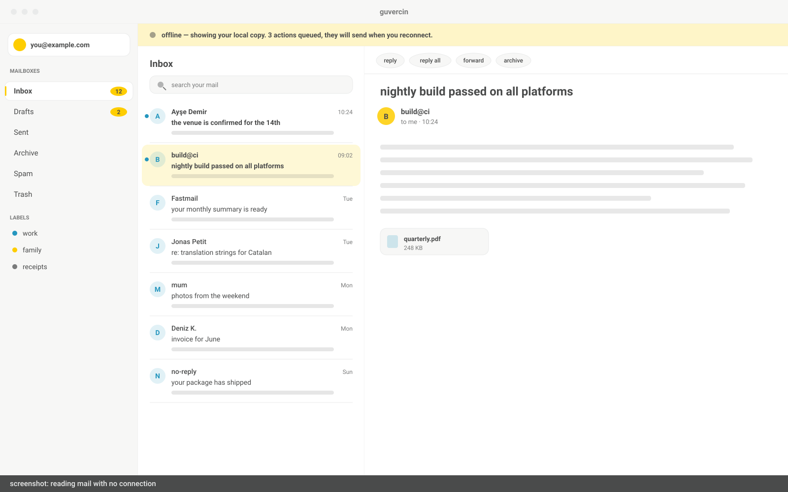
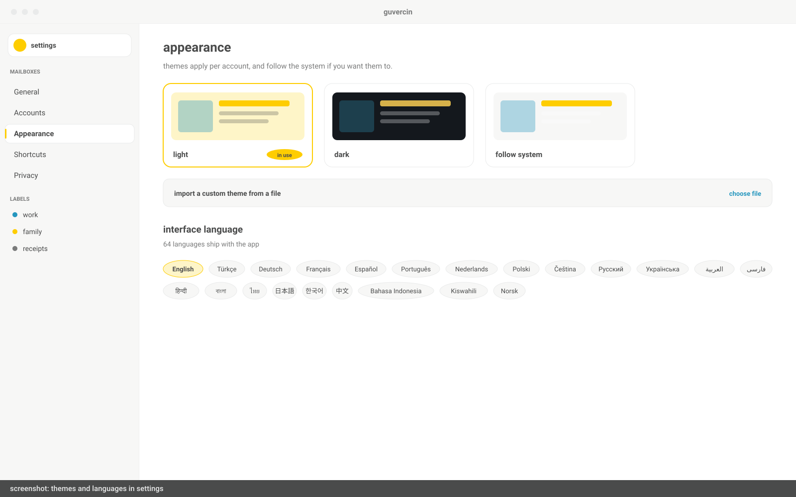
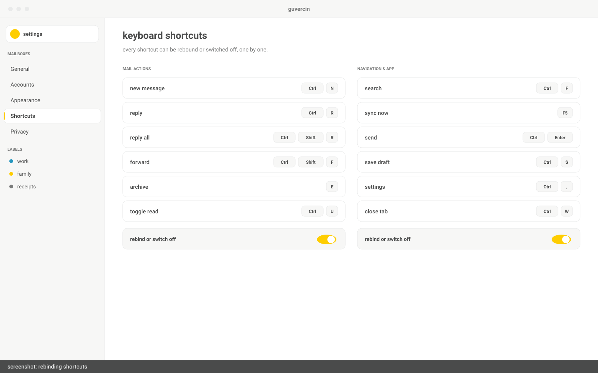
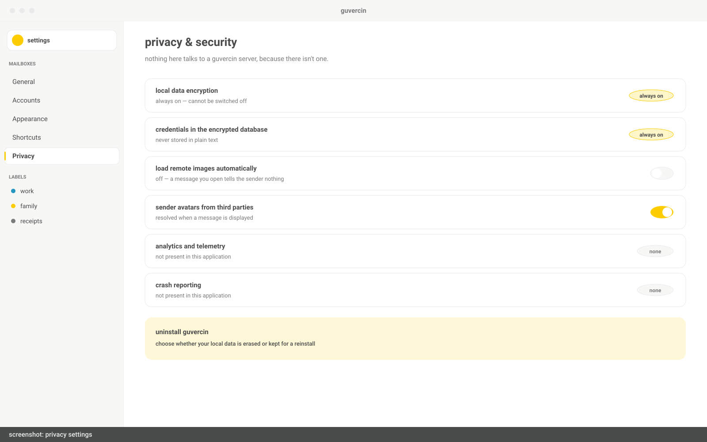

everything guvercin does
a mail client, a calendar, an address book and a task list — in one native window, on your own machine.

an inbox that behaves
several IMAP and SMTP accounts side by side, each with its own local database. a full folder tree you can reorder, custom label ordering, and a choice of how unread counts appear.
conversation view on or off, an adjustable reading pane, and per-account theme and font size. search — including a structured advanced search — keeps working when you are offline.
- open .eml files directly — guvercin registers as a handler for message/rfc822 files
- export a message as .eml or raw RFC822
- block a sender, with the rule stored locally
- print a message

one click for Google, plain IMAP for everyone else
“continue with Google” runs an OAuth2 (XOAUTH2) PKCE flow in your system browser, so your password is never typed into guvercin and no token ever passes through the interface. the app ships with a working OAuth client, so it works out of the box.
for everything else, guvercin probes your provider’s servers from your address and lets you override host, port and encryption by hand. it works with Gmail, Outlook and Hotmail, Yandex, iCloud, Fastmail and self-hosted servers.

write properly
a rich-text WYSIWYG editor with a formatting ribbon, drag & drop attachments, and a compose window you can pop out into its own native window. drafts save locally and can be sent later.
right-click any file in your file manager and choose “send with guvercin” to start a message with it already attached — registered automatically on Windows and Linux. on macOS, drag the file onto the window or use Open With.

your week, in the same window
multiple calendars per account, CalDAV sync against your own server, Google Calendar sync, and .ics import and export.
it sits beside your mail rather than in another tab, which is the entire point.

an address book that is actually yours
contact lists and groups, vCard import and export, and Google Contacts sync.
sender avatars are resolved when a message is displayed, and addresses autocomplete while you write.

todos next to your mail
multiple task lists, one-tap clearing of completed items, and Google Tasks sync — so the thing you were supposed to do about that email lives beside the email.

a plane-friendly mail client
mailboxes sync into a local database, so mail, attachments, inline images and search all keep working with no connection.
anything you do offline is queued and replayed when you are back, and you can trigger a full or per-mailbox sync whenever you want.

make it yours
light and dark themes plus follow-the-system, and custom themes you can import from a file. 64 interface languages ship with the app, all contributed through the repository.
guvercin ships with Hanken Grotesk and lets you change the reading font per account.
- English · Türkçe · Deutsch · Français · Español · Português
- Русский · Українська · Polski · Nederlands · Svenska · Norsk
- العربية · فارسی · हिन्दी · বাংলা · ไทย · 日本語 · 한국어 · 中文
- …and 40 more

every shortcut is yours to change
shortcuts are grouped into mail actions, navigation and tabs, view and layout, compose and application, and every single one can be rebound or switched off.

designed so we never see anything
every database is SQLCipher-encrypted and cached files are sealed with XChaCha20-Poly1305. that cannot be switched off. the key that unlocks them is a file in your user profile, readable by anything running as you, so keep full-disk encryption on — the details are in SECURITY.md.
remote images are not loaded until you ask for them, so opening a message tells the sender nothing. there is no telemetry, no crash reporting and no advertising anywhere in the app. when you uninstall, guvercin offers to erase its local data — or to keep it for a reinstall.
the defaults, if you never change a thing
- new message Ctrl N
- reply Ctrl R
- reply all Ctrl Shift R
- forward Ctrl Shift F
- archive E
- toggle read Ctrl U
- search Ctrl F
- sync F5
- send Ctrl Enter
- save draft Ctrl S
- settings Ctrl ,
- close tab Ctrl W